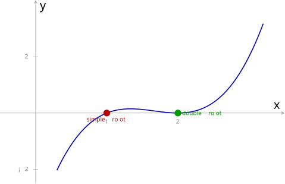
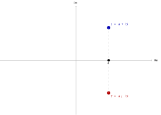

23 多项式 (II)（Polynomials II）
第四章定义了多项式（即单项式的和），并学习了提公因式、分组分解、十字相乘等因式分解方法。但那些方法依赖「观察」与「技巧」，缺乏系统化的理论支撑。
本章将视野收窄到单变量多项式
（或 ），引入三大核心工具：除法算法（§23.2）、余式定理（§23.3）、因式定理（§23.4）。这三者协同，构成了系统化分解多项式的核心机制，不再依赖灵感，而是有一套确定的算法流程。 回顾第十七章，复数系
是 的扩张。本章将先在实数域 上讨论根与因式的关系，再借助代数基本定理提升至复数域 ，得出多项式的完全因式分解，最后回到 ，明确实系数多项式的不可约因式分类。 本章按概念依赖顺序铺排：先建立单变量多项式的记法与基本概念（§23.1），引入除法算法与长除法（§23.2），推导余式定理（§23.3），建立因式定理并深入讨论根与因式的结构（§23.4），最后将因式分解应用于求最大公因式与最小公倍式（§23.5），并作全章总结（§23.6）。
23.1 单变量多项式的记法与基本概念
本节难度上限：T C+ ｜ C D+ ｜ E D ｜ Q C
本节回顾第四章的多项式定义，将其限定到单变量情形，建立记法约定与基本概念（首项、首一多项式、相等条件）。
23.1.1 单变量多项式的记法
第四章定义了多项式：由单项式的和构成的代数表达式。当多项式仅含一个变量时，即为单变量多项式。回顾第十九章，函数是集合间的对应
（一）单变量多项式。 一个单变量多项式 (univariate polynomial) 是形如
的函数，其中
（二）单变量实多项式。 若限定系数
称为单变量实多项式 (univariate real polynomial)。全体单变量实多项式构成的集合记为
注意： 单变量实多项式是一个实函数，只接受实数输入，输出实数。后面 §23.4.2 讨论共轭根定理时，「实系数多项式」指系数为实数的多项式（见下方术语），它作为复多项式的特例可以接受复数输入，与此处的「单变量实多项式」不同。
（三）术语。 上述两类多项式共享以下术语：
- 若
- 当所有
- 非零多项式的次数 (degree) 为变量的最高幂次，记为
- 实系数多项式 (real-coefficient polynomial)：系数
实系数多项式可以接受复数输入（
， ），只是系数为实数。这与（二）中的「单变量实多项式」（ 的实函数）不同，后者不能接受复数输入。
多项式不只是一串系数的排列，它定义了一个从
本章以
在因式分解的讨论中，常将因式归一化为首项系数为
若非零单变量多项式
则称
任意非零单变量多项式
这类似于整数质因数分解中取正质数的约定：归一化使比较与运算有统一基准。
判断以下各表达式是否为单变量多项式；若是，指出其次数、首项系数与常数项。
1.
2.
3.
将
提取首项系数
括号内
23.1.2 单变量多项式的相等
回顾第四章，多项式的最简表示是指将同类项合并后、按降幂排列的形式。以下讨论多项式相等时，均默认已化为最简表示。
设
已知
由多项式相等的等价条件，次数相同且各项系数相等。
故
此为第四章多项式相等的等价条件在单变量情形下的特例。
23.2 单变量多项式的除法
本节难度上限：T B+ ｜ C B ｜ E C ｜ Q C
本节建立多项式的除法算法，即本章的核心结构定理。它保证了商式与余式的存在性与唯一性，是余式定理与因式定理的理论根基。
23.2.1 除法算法
类似整数的带余除法（被除数
设
其中
存在性。 对
基础情形：若
归纳步骤：设
构造商式的第一项
首项
唯一性。 假设
若
与整数除法的类比： 整数带余除法中，
， ；多项式除法中， ， 。整数比较「大小」，多项式比较「次数」。
当余式为零（零多项式）时，除式整除被除式。
设
则称
若不存在这样的
除法算法为整除判定提供了等价刻画：
当且仅当 除以 的余式 。这与整数中 的余数为 完全平行。
23.2.2 长除法
除法算法的存在性证明是构造性的：它给出了执行除法的具体步骤。这一步骤称为长除法。
利用除法算法的构造性证明，按以下步骤执行多项式长除法：
- 将
- 以
- 将该项乘以
- 以所得新多项式为新的被除式，重复步骤 2–3，直至余式的次数小于
长除法与整数长除法（如
）结构完全平行：整数按「位值」（ 的幂）排列，多项式按 的幂排列。
求
被除式
第一轮。 首项相除：
此时列式为：
第二轮。 余式
此时列式为：
终止。 余式
故商式
求
初始列式为：
第一轮。 首项
此时列式为：
第二轮。 首项
此时列式为：
终止。 余式
故商式
注意：除式为二次式时，余式次数可为
或 。余式定理（§23.3）仅适用于一次除式，此处必须用长除法。
判断
执行长除法
第一轮。
第二轮。
第三轮。
余式为
此例中
实为 的三重根（参见 §23.4.2）。
23.2.3 待定系数法求商式与余式
长除法提供了执行除法算法的具体步骤，但当除式次数较高或被除式较复杂时，逐项计算可能繁琐。本节介绍另一种方法，即待定系数法 (method of undetermined coefficients)：利用除法算式
是恒等式的性质，设出 与 的一般形式（含待定系数），展开比较系数求解。
核心原理
由除法算法，
由此可设
对比系数法在第四章（多项式相等的等价条件）和第六章（恒等式中待定系数求未知量）已介绍。此处将其应用于除法算式，本质相同：两个多项式恒等当且仅当对应系数相等。区别在于：此处利用次数限制（
技巧：利用次数限制设出结构
设商式与余式的结构时，关键是利用次数限制：
- 若
- 确定次数。 计算
- 设结构。 按次数设
- 代入展开。 将
- 比较系数。 对比左右两边各次项系数，得到方程组。
- 求解。 解方程组得待定系数，写出
- 验证（可选）。 用长除法或代入特殊值验证结果。
求
确定次数。
设结构。 设
代入展开。
比较系数。 与
求解。
故商式
验证（长除法）：
， ，相减得 ； ， ，相减得 。结果一致。✓
求
确定次数。
设结构。 设
代入展开。
比较系数。 与
求解。
故商式
验证： 展开右边
。✓
求
确定次数。
设结构。 注意被除式
代入展开。
比较系数。 与
求解。
故商式
验证：
。✓
求
确定次数。
设结构。 设
代入展开。
比较系数。 与
求解。
故商式
验证： 展开右边
，加 得 。✓
23.3 余式定理
本节难度上限：T B- ｜ C C ｜ E C ｜ Q C
本节推导除法算法在除式为一次式时的简洁推论，即余式定理。它使余式的计算无需执行长除法，仅需代入求值。
23.3.1 余式定理
当除式为一次式
设
由除法算法，存在
代入
故
余式定理可推广到除式为一般一次式
设
由
23.3.2 余式定理的意义
余式定理提供了一种无需执行长除法即可计算余式的方法，仅需代入
适用范围： 余式定理仅适用于除式为一次式
的情形。当除式为高次式（如 ）时，余式不再是常数，必须用长除法（参见 §23.2 示例）。
已知
由余式定理，余式
故余式为
已知
由推论，
求
除式
第一轮：
余式
商式
此例中余式
为一次式，展示了二次除式下余式的一般情形。若误用余式定理，将无法得到正确结果：余式定理仅适用于一次除式。
23.4 因式与根的关系
本节难度上限：T B+ ｜ C B- ｜ E B+ ｜ Q C+
本节是本章核心。先建立因式定理（因式与根的基本双向等价），再分实数域
和复数域 两个层次深化根与因式的结构关系，最后将理论应用于系统化分解多项式。
23.4.1 因式定理
余式定理告诉我们，
设
由余式定理，
其中第一个等价来自整除的定义（余式为零），第二个等价来自余式定理。
若
因式定理建立了根与因式之间的第一层联系：每个根
判断
计算
由因式定理，
已知
故
23.4.2 根与因式的深层关系
重根与因式的整除性质
一个根
设
因式定理给出的是
的情形（ 但未讨论更高次幂）。重根概念是对因式定理的自然推广，对 和 均适用。
重数可以从图像上直观理解：单根处函数图像穿过

查看 TikZ 原始碼
\usepackage{pgfplots}
\pgfplotsset{compat=1.16}
\begin{document}
\begin{tikzpicture}[scale = 2]
\begin{axis}[
width=10cm, height=7cm,
xmin=-0.5, xmax=3.5, ymin=-2.5, ymax=4,
axis lines=middle,
xlabel={$x$}, ylabel={$y$},
xtick={1,2}, ytick={-2,2},
ticklabel style={font=\tiny, gray},
axis line style={gray!70}
]
% P(x) = (x-1)(x-2)^2 = x^3 - 5x^2 + 8x - 4
\addplot[domain=0.3:3.2, samples=80, blue!70!black, thick] {x^3 - 5*x^2 + 8*x - 4};
% simple root at x=1
\node[circle, fill=red!70!black, inner sep=2pt] at (axis cs:1,0) {};
\node[anchor=north, font=\tiny, red!70!black] at (axis cs:1,0) {simple root};
% double root at x=2
\node[circle, fill=green!60!black, inner sep=2pt] at (axis cs:2,0) {};
\node[anchor=west, font=\tiny, green!60!black] at (axis cs:2,0) {double root};
\end{axis}
\end{tikzpicture}
\end{document}图 23-1：
以下定理描述了一次因式在整除乘积时的行为。它是多项式版本的「欧几里得引理」（回顾第一章）。
设
由
在
此定理是数论中欧几里得引理 (Euclid's lemma)（第一章）的多项式版本：
| 数论（ |
多项式（ |
|
|---|---|---|
| 不可约元素 | 质数 |
一次因式 |
| 命题 | 若 |
若 |
| 证明工具 | 贝祖等式 | 因式定理 |
欧几里得引理是整数质因数分解唯一性的基石；因式的整除传递性在多项式因式分解中扮演完全平行的角色：一次因式在多项式中具有「质数性」。
实数域
现在限定在实数域
设
假设
因此
即
给定
测试
不同根有
若一个
设
若
故
根数上界告诉我们根「不会太多」，但并未说明根与因式如何组织。以下定理给出实数域上的根—因式结构。
设
其中
对
第一次除以
若
对每个实根
其中
的局限： 定理中的 在 上无根，但并不意味 一定不可再分解。例如 在 上无根，却可分解为
提升至复数域
回顾第十七章，复数系
设
代数基本定理的证明需要复分析或拓扑学工具，超出 DSE 范围。此处作为已知事实接受。
这一定理是代数学最深刻的结论之一：它断言复数系
代数基本定理可用复分析中的刘维尔定理 (Liouville's theorem) 证明，此处列出供欣赏。
刘维尔定理： 若整函数
（即在全平面 上可导的函数）有界，则 必为常数。
证明思路。 设
此证明需复分析知识（整函数、刘维尔定理），超出 DSE 范围，仅供欣赏。
由代数基本定理，反复应用因式定理与除法算法，可将多项式在
设
其中
对次数
基础情形（
归纳步骤：设
得证。
将重根合并后，可写为：
对照实数域定理： 在
上，定理中的 未必为常数；在 上，本推论断言 （常数），即一切非常数多项式在 上均可彻底分解为一次因式之积。这是复数域相较于实数域的根本优势。
对于实系数多项式，复数根有一个重要的对称性质。
设
设
其中第二行用了
由对称性（

查看 TikZ 原始碼
\begin{document}
\begin{tikzpicture}[scale=1.3]
% real axis
\draw[->, gray!70] (-3.5,0) -- (3.5,0) node[right, font=\tiny, black] {$\operatorname{Re}$};
% imaginary axis
\draw[->, gray!70] (0,-2.5) -- (0,2.5) node[above, font=\tiny, black] {$\operatorname{Im}$};
% point z = a + bi
\node[circle, fill=blue!70!black, inner sep=2pt] at (1.5,1.5) {};
\node[anchor=south west, font=\tiny, blue!70!black] at (1.5,1.5) {$z = a+bi$};
% point conjugate z = a - bi
\node[circle, fill=red!70!black, inner sep=2pt] at (1.5,-1.5) {};
\node[anchor=north west, font=\tiny, red!70!black] at (1.5,-1.5) {$\overline{z} = a-bi$};
% dashed line connecting them
\draw[dashed, gray!50] (1.5,1.5) -- (1.5,-1.5);
% projection on real axis
\node[circle, fill=black, inner sep=1.5pt] at (1.5,0) {};
\node[anchor=north, font=\tiny] at (1.5,0) {$a$};
\end{tikzpicture}
\end{document}图 23-2：复平面上，共轭根
共轭根定理的意义： 实系数多项式的非实复根总是成对出现。这意味着实系数多项式在
上的完全分解中，非实复根成对贡献两个一次因式 ，其乘积为实系数二次式。
由共轭根定理，实系数多项式在
设
- 一次因式
- 二次因式
因
由
由共轭根定理，非实复根成对出现：
其实部
将所有一次实因式
这解释了实数域定理中
的情形： 无实根，但必可分解为若干个判别式 的二次因式之积。
| 域 | 根的存在性 | 因式分解结构 | 不可约因式 |
|---|---|---|---|
| 一次式及 |
|||
| 每个非常数多项式必有根 | 仅有一次式 |
判断
计算
继续检验
因此
另注意
是 的二重根（因 但 ）。
已知
由因式定理，
故
实系数多项式
验证。
共轭根。 由共轭根定理（
长除法。
检验不可约性。
两者判别式均小于
验证：
。✓
证明
无实根。 对任意
仍可分解。 设
与
两个二次因式的判别式均为
此例说明：实数域定理中的
无实根，不意味 不可再分解。 在 上无根，却可分解为两个判别式 的二次因式。这正是推论所断言的：实系数多项式在 上的不可约因式仅有一次式与 的二次式两类。
23.4.3 因式定理与除法算法的协同：分解多项式
因式定理与除法算法的分工如下：
| 步骤 | 所用定理 | 作用 |
|---|---|---|
| 检测 | 因式定理 | 计算 |
| 提取 | 除法算法 | 计算 |
这是一个「检测 → 提取」的迭代循环：每找到一个因式，立即用除法算法将其提取出来，降低多项式次数，然后在新的商式上继续检测。由于除法算法保证了
- 寻找候选根。 从
- 检测（因式定理）。 代入候选值
- 提取（除法算法）。 以
- 检查重数。 对商式
- 迭代。 以最终得到的降次多项式为新的
终止条件取决于所处的域：
- 在
- 在
此算法的效率来自除法算法的降次性质：每次成功提取一个一次因式，多项式次数严格减少
，确保了算法的有限终止性。这与整数的质因数分解完全平行。
完全分解
寻找候选根。 常数项
提取。
检查重数。
迭代。 对
故
三个根
完全分解
测试
测试
提取。 长除法
检查重数。
再次提取。 长除法
检查重数。
处理
故在
若在
上分解： 的根为 ，故
在
测试
提取。 长除法
检查重数。
处理
故在
在 上无实根，但在 上有根 。这正对应了实数域定理中 无实根的情形，即 为判别式 的二次不可约因式。
23.5 最大公因式与最小公倍式
本节难度上限：T B- ｜ C C+ ｜ E C ｜ Q C+
本节将整数的 H.C.F. 与 L.C.M. 概念迁移至单变量多项式。核心方法依赖于完全因式分解：在
上分解至一次及不可约二次因式，在 上分解至一次因式。
23.5.1 最大公因式
回顾第四章，公因式与最大公因式的概念适用于一般多项式。在单变量多项式语境下，可给出更具操作性的定义。
设
其中
系数部分取
- 将每个多项式完全因式分解（运用第四章的因式分解方法、本章的因式定理及第六章的恒等式）。
- 将所有因式归一化为首一形式。
- 找出所有公共的因式。
- 取每个公共因式的最低次幂相乘。
- 系数部分取各多项式首项系数的最大公因数。
求
求
先因式分解。
故
求
23.5.2 最小公倍式
设
系数部分取各多项式首项系数的最小公倍数。
- 将每个多项式完全因式分解。
- 将所有因式归一化为首一形式。
- 找出所有出现过的不同因式。
- 取每个不同因式的最高次幂相乘。
- 系数部分取各多项式首项系数的最小公倍数。
求
求
由 HCF 示例 2 已知
求
验证 HCF·LCM 关系：
（见 HCF 示例 3）， 。✓
23.5.3 HCF 与 LCM 的关系
对任意两个非零单变量多项式
其中
设
对每个因式
而
设
HCF。 公共因式为
LCM。 所有因式为
验证。
两者相等。✓
23.5.4 与整数的类比
多项式 HCF/LCM 与整数的 HCF/LCM 在结构上完全平行：
| 概念 | 整数 | 单变量多项式 |
|---|---|---|
| 基本构成单元 | 质数 | 不可约首一多项式（一次因式等） |
| 规范化约定 | 取正质数 | 归一化为首一形式 |
| HCF | 公共质因数取最低次幂 | 公共因式取最低次幂 |
| LCM | 所有质因数取最高次幂 | 所有因式取最高次幂 |
| HCF × LCM |
23.5.5 有理函数的运算
回顾第四章，代数分式的运算原则是「先因式分解再约分」。有了 HCF 与 LCM，这些运算有了更系统的工具。
- 约分：分子分母同除以 HCF。
- 通分：分母取 LCM。
- 乘除：先因式分解，约去公因式后相乘（除法取倒数转化为乘法）。
- 加减：通分后分子加减，分母保持 LCM。
求
完全因式分解。
归一化为首一形式（已满足）。
HCF。 公共因式为
LCM。 所有因式为
，而 。两者相等。
化简
分子
分母
故
分子与分母的 HCF 为
计算
分母因式分解：
两个分母的 LCM 为
分子相加：
23.6 小结 (Summary)
六条主线
- 单变量多项式（§23.1）：仅含一个变量的多项式，记为
- 除法算法与整除（§23.2）：对任意
- 余式定理（§23.3）：
- 因式定理（§23.4.1）：
- 根与因式的深层关系（§23.4.2，分
- 重根：
- 因式的整除传递性：多项式版本的欧几里得引理：一次因式在多项式中具有「质数性」。
- 在
- 提升至
- 重根：
- HCF 与 LCM（§23.5）：将多项式完全因式分解并归一化为首一形式后，公共因式取最低次幂得 HCF，所有因式取最高次幂得 LCM。满足
公式总表
| 定理 / 概念 | 公式 / 结论 | 适用范围 |
|---|---|---|
| 除法算法 | 任意除式 | |
| 余式定理 | 余式 |
除式为 |
| 余式定理推论 | 余式 |
除式为 |
| 因式定理 | 一次因式 | |
| 根数上界 | ||
| 共轭根定理 | 实系数 |
实系数多项式 |
| 仅一次式及 |
实系数多项式 | |
| HCF | ||
| LCM | ||
| HCF × LCM |
| 域 | 根的存在性 | 因式分解结构 | 不可约因式 |
|---|---|---|---|
| 一次式及 |
|||
| 每个非常数多项式必有根 | 仅有一次式 |
词汇表 (Vocabulary)
| 中文 | 英文 | 备注 |
|---|---|---|
| 单变量多项式 | univariate polynomial | |
| 首项 | leading term | |
| 首项系数 | leading coefficient | |
| 首一多项式 | monic polynomial | 首项系数 |
| 零多项式 | zero polynomial | |
| 次数 | degree | |
| 除法算法 | division algorithm | |
| 被除式 | dividend | |
| 除式 | divisor | |
| 商式 | quotient | |
| 余式 | remainder | |
| 长除法 | long division | |
| 整除 | divisibility | |
| 因式 | factor | |
| 倍式 | multiple | |
| 余式定理 | remainder theorem | 余式 |
| 因式定理 | factor theorem | |
| 根 / 零点 | root / zero | |
| 重根 | multiple root | |
| 重数 | multiplicity | |
| 单根 | simple root | |
| 二重根 | double root | |
| 代数基本定理 | fundamental theorem of algebra | 非常数复系数多项式必有复根 |
| 完全因式分解 | complete factorization | |
| 共轭根定理 | conjugate root theorem | 实系数多项式的非实复根成对 |
| 不可约因式 | irreducible factor | |
| 最大公因式 | highest common factor (H.C.F.) | 公共因式取最低次幂 |
| 最小公倍式 | least common multiple (L.C.M.) | 所有因式取最高次幂 |
| 有理函数 | rational function | 多项式之商 |
备课提示 (Teaching Notes)
- 变量记号
- 除法算法的定位：除法算法是本章的核心结构定理，它保证了商式与余式的存在性与唯一性，是余式定理与因式定理的理论根基。存在性证明用归纳法（对
- 余式定理的适用范围：余式定理仅适用于除式为一次式
- 因式定理的「检测—提取」循环：因式定理负责检测，除法算法负责提取。每次提取降次
- 共轭根定理的证明：此证明简洁优美，展示了共轭运算的性质（
- 代数基本定理的处理：证明超出 DSE 范围（需复分析或拓扑学），作为已知事实接受。须明确告知学生这是「接受」而非「证明」，避免误解。
- HCF/LCM 与整数的类比：多项式 HCF/LCM 与整数 HCF/LCM 在结构上完全平行。建议用对照表呈现，帮助学生迁移已有知识。规范化约定：整数取正质数，多项式归一化为首一形式。
- 有理根定理的定位：作为寻找候选根的系统化工具，给结论但不证明。实务上亦可从
- TikZ 插图：本章共 2 张插图。图 23-1 展示单根与重根的图像特征（穿过
<sub>本章撰写于 2026 年 7 月 19 日。</sub>
反向链接
正在加载反向链接…
本文引用
正在加载…